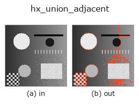

halcon_ext op• データ種: contour → contour
• 呼び出し: fullseye.apply(img, "hx_union_adjacent", a=0.5, b=0.5) (2-D は 1 画像 + 2 スカラつまみ a,b∈[0,1] のモデル)
• HALCON 相当: union_adjacent_contours_xld(意味・パラメータは HALCON リファレンスが参考になる)

*図は合成の入力 128×128 で実際に走らせた出力。左が入力、右が出力。点群は上から見た散布(明るさ = z)、1-D 列は折れ線、体積は z 方向の最大値投影、動画は中央フレーム、複素画像は振幅、絵にならない返り値は値そのもの。*
つまみ a を振る(0.1 / 0.5 / 0.9、もう一方は既定):
▸ hx_union_adjacent: knob a sweep (docs site)
*つまみ b は出力を変えない(実測: 0.1 / 0.5 / 0.9 で同一)。*
段階(前置きの op → この op。左から順):
▸ hx_union_adjacent: stages (docs site)
別の画像でも(合成シーン / 写真 / 硬貨。上段が入力、下段がその出力。つまみは既定):
▸ hx_union_adjacent: other inputs (docs site)
端点が近い(閾値 a)contour を貪欲に連結する。
contour のリストを走査し、`cs[i] の終点と cs[j](j > i)の始点の距離が tol 以下なら cs[j]` を
`cs[i]` の後ろにつないで 1 本にする。1 回つなぐたびに先頭から走査をやり直し、つなげる対が無くなるまで繰り返す。
• `a → 許容距離 tol = 1 + a*8`(1〜9 画素)。
• `b` は未使用。
判定は「終点→始点」の向きだけで、始点どうし・終点どうしが近い場合に反転してつなぐことはしない(向きの揃った
contour 列を想定)。貪欲法なので 3 本以上が候補になるときはリスト順で先に見つかった相手とつながる
(`hx_sort_contours` で順序を整えると結果が安定する)。つなぎ目の点は重複せず、隙間は直線で飛ぶ。
計算量は本数の 2 乗×連結回数。つないだ後の閉じ具合は `hx_test_closed_xld` で確認する。
• gallery2d_halcon_ext ファミリ ガイド
• サンプルデータ カタログ(DL URL / ライセンス) — 2-D は skimage.data(BSD/public)+ 合成、3-D は実データ源(Stanford/PDS 等)の DL URL。
• 演算子の来歴・参考文献 — この op 族の元になった研究/手法の出典。
• アルゴリズムの正典(著者・年)と用途は上記ファミリ使い方ガイドに記載。
下のプログラムは実際に走ることを確かめてある(図と同じ入力)。Studio のヘルプではこのブロックがボタンになり、その場で読み込んで実行できる。
threshold 0.50 0.50 sk_find_contours 0.50 0.50 hx_union_adjacent 0.50 0.50
▸ Load this pipeline · Load & run
• gallery2d_halcon_ext — py -3.11 examples/gallery2d_halcon_ext.py
contour を入力に取れる)identity · select_contours · smooth_contours · fit_line_contours · contours_to_region · count_contours · total_length · select_contours_xld
halcon_ext)hx_gen_circle · hx_gen_ellipse · hx_gen_rectangle2 · hx_gen_checker_region · hx_gen_grid_region · hx_gabor · hx_fit_surface1 · hx_fit_surface2
*Provenance: ops.py — 2D operator registry. この per-op ノートは tools/opdocs.py md が自動生成(手編集しない)。*
© 2026 Kazufumi Furuse — Fullseye operator documentation. Licensed under Apache-2.0.
{kind=link}
{kind=link}
{kind=link}